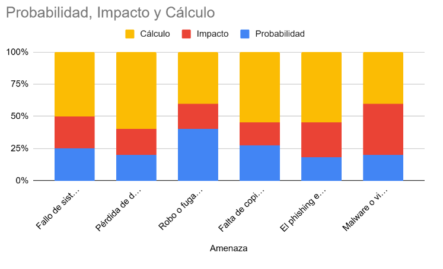

Listado y clasificación de los activos de la empresa
| ID | Nombre | Descripción | Responsable | Tipo | Ubicación | Crítico |
|---|---|---|---|---|---|---|
| ID_01 | INS_01 | Protección incendios y alarma de intrusos | Jefe de seguridad | Físico | Instalaciones | Sí |
| ID_02 | OFICINA_01 | PC 1 | Departamento oficina | Físico | Oficina | No |
| ID_03 | OFICINA_02 | PC 2 | Departamento oficina | Físico | Oficina | No |
| ID_04 | OFICINA_03 | PC 3 | Departamento oficina | Físico | Oficina | No |
| ID_05 | OFICINA_04 | PC 4 | Departamento oficina | Físico | Oficina | No |
| ID_06 | Servidor de la empresa | Servidor 01 | Departamento Dirección | Físico | Dirección | Sí |
| ID_07 | Impresora_01 | Impresora | Depart. oficina | Físico | Oficina | No |
| ID_08 | DIRECCION_02 | Copia seguridad de los datos | Departamento Dirección | Físico | Dirección | No |
| ID_09 | SALA REUNIONES_01 | Portátil | Departamento sala de reuniones | Físico | Sala de reuniones | No |
| ID_10 | Antivirus_01 | Antivirus | Empresa externa | Lógico | Software | Sí |
Listado y clasificación de las amenazas que puede sufrir la empresa
Amenazas de la empresa
| Amenazas | Vulnerabilidades |
|---|---|
| Fallo de sistema en detección de incendios. | Ins_01 |
| Pérdida de datos críticos si no hay copias de seguridad adecuadas. | Servidor 1 |
| Robo o fuga de información impresa. | Impresora-01 |
| Falta de copias actualizadas en caso de un fallo del sistema principal. | Copia seguridad de los datos (Dirección) |
| Software desactualizado que no detecte nuevas amenazas. | Antivirus_01 |
| 1. Malware o virus que comprometan la información almacenada. 2. Fallos de hardware o software que afecten la productividad. 3. Pérdida o robo de equipos con información sensible. |
Pc_1,2,3 |
Empleado → El Phishing es una amenaza de ingeniería social pero a los/as empleados/as.
Estimación justificada del impacto y la probabilidad de cada amenaza
| Activo | Cualitativo | Cualitativo | Descripción |
|---|---|---|---|
| Ins_01 | Media | 2 | Fallo de sistema en detección de incendio |
| Servidor 1 | Alta | 3 | Pérdida de datos críticos si no hay copias de seguridad adecuadas |
| Impresora-01 | Media | 2 | Robo o fuga de información impresora |
| Copia seguridad de los datos (Dirección) | Alta | 3 | Falta de copia actualizadas en caso de un fallo del sistema central |
| Empleados | Media | 2 | El phishing en una amenaza de ingeniería social hacia los empleados |
| Pc_2 | Media | 2 | Malware o virus que comprometa la información almacenada |
| Pc_3 | Media | 2 | Pérdida o robo de equipo con información sensible |
| Pc_4 | Media | 2 | Fallo de hardware o software que afecte la productividad |
Cálculo de los riesgos y presentación visual de los mismos
| Activo | Amenaza | Probabilidad | Impacto | Cálculo |
|---|---|---|---|---|
| Ins_01 | Fallo de sistema en detección de incendio | 2 | 2 | 4 |
| Servidor_1 | Pérdida de datos críticos si no hay copias de seguridad adecuadas | 3 | 3 | 9 |
| Impresora | Robo o fuga de información impresora | 2 | 1 | 2 |
| Copia seguridad de los datos (dirección) | Falta de copia actualizadas en caso de un fallo del sistema central | 3 | 2 | 6 |
| Empleados | El phishing en una amenaza de ingeniería social hacia los empleados | 2 | 3 | 6 |
| Pc_1,2,3 | Malware o virus que comprometa la información almacenada | 1 | 2 | 2 |

Establecer el correcto tratamiento del riesgo
| Activo | Nivel de riesgo | Tratamiento de riesgo |
|---|---|---|
| Servidor_1 | Muy alta | Implementar copias de seguridad regulares y soluciones de recuperación. |
| Copia seguridad de los datos (dirección) | Alta | Asegurar que las copias de seguridad sean automáticas y se actualicen frecuentemente. |
| Empleados | Alta | Capacitar a los empleados sobre la detección y prevención del phishing. |
| Pc_1,2,3 | Medio | Instalar software de protección contra el malware y realizar copias de seguridad regulares. |
Propuesta de al menos 2 salvaguardas por cada amenaza
| Activo | Amenaza | Salvaguarda |
|---|---|---|
| Ins_01 | Fallo de sistema en detección de incendio |
Instalación de un sistema redundante de detección de incendios. Mantenimiento y pruebas del sistema actual. |
| Servidor_1 | Pérdida de datos críticos si no hay copias de seguridad adecuadas |
Implementar copias de seguridad automáticas y frecuentes. Almacenar copias de seguridad en ubicaciones geográficamente separadas. |
| Impresora | Robo o fuga de información impresora |
Implementar un acceso físico a la impresora. Utilizar funciones de impresora segura, como la impresión con pin. |
| Copia seguridad de los datos (dirección) | Falta de copia actualizadas en caso de un fallo del sistema central |
Configurar copias de seguridad automatizadas y verificaciones periódicas. Realizar simulacros de recuperación de datos para asegurar la validez de las copias de seguridad. |
| Empleados | El phishing en una amenaza de ingeniería social hacia los empleados |
Realizar formaciones sobre seguridad y concienciación sobre el phishing. Implementar filtros avanzados de correos electrónicos y sistemas de validación multifactor. |
| Pc_1 | Malware o virus que comprometa la información almacenada |
Instalar y actualizar regularmente software antivirus. Restringir los permisos de instalación de software a usuarios no autorizados. |
| Pc_2 | Pérdida o robo de equipo con información sensible |
Implementar cifrado de discos y datos sensibles. Utilizar software de rastreo y bloqueo remoto desde dispositivos. |
| Pc_3 | Fallo de hardware o software que afecte la productividad |
Programar mantenimiento regular de software y hardware. Utilizar sistemas de redundancia y seguridad. |
Cybersecurity recommendations
- Use strong and secure passwords.
- Don’t use the same password on all sites.
- Don’t download and execute untrusted files.
- Enable the 2FA (Two Factor Auth).
- Always update your software and OS.
- Don’t trust in third party or suspicious links.
- Do security copies of your files.
- Don’t connect to free & public WiFi.
- Use trustable antivirus on your devices.
- Don’t share confidential information.